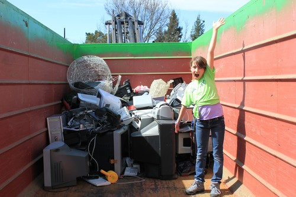

Mission #3
Get Active
Show us – using photos, videos and words – what your own collection of electronic devices looks like. Take some time to look through your own drawers and closets – what electronic or electric devices do you own? Which are you no longer using? Take photos and report back to us on what you found. Then, do some research to find out what they are made of and what options are available for you to dispose of them in the most responsible way. What did you learn?

My daughter, Jessie, designed, communicated and carried out an e-waste collec...
.
Here's my journey from home to the local recycling depot to dispose of my eWa...
.
time laps video of the tedious and long process of disassembling an old laser...
.
They are not e waste yet, buy they will be.... !!!
.
1 laptop, 1 tablet, 2 cell phones, 1 external harddrive, many miscellaneous w...
.
As some have shared before, cradle to cradle is an applicable design process....
.
This is a list of electronics that I either don't use or rarely use but still...
.
Largely, because there isn't anywhere else for it to go. Old cables, outdated...
.
I was happy to learn about Best Buy's e-waste recycling standards when choosi...
.